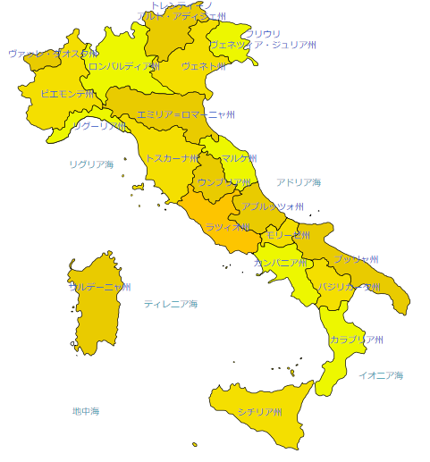

州（レジョーネ、Regione）はイタリアの第一級行政区画で、イタリア全土に20個ある。「地方」と訳されることもあるが、公選の首長 (presidente)・評議会 (giunta)・議会 (consiglio regionale) を持つ広域自治体である。
州には特別自治州(regione autonoma a statuto speciale) と通常州 (regione a statuto ordinario) がある。
特別自治州は5つある。イタリア共和国憲法116条において特別な地位を持つと規定された州である。シチリア、サルデーニャ、トレンティーノ=アルト・アディジェ、ヴァッレ・ダオスタが1948年に、フリウリ＝ヴェネツィア・ジュリア州は1963年に成立した。特別自治州は一定の分野における独占的な立法権が認められる、それぞれの地域で徴税される国税のうち付加価値税を除いた税収配分を受けるなど（通常州よりも）大きな地方自治権を有する。通常州の制度は特別自治州よりも遅く、1972年に制定された。

| 連番 | 州名（日本語） | 州名（イタリア語） | 人口 (2023年) | 州都（日本語） | 州都（イタリア語） | 特別州 |
|---|---|---|---|---|---|---|
| 1 | アブルッツォ州 | Abruzzo | 約1,273,000人 | ラクイラ | L'Aquila | |
| 2 | バジリカータ州 | Basilicata | 約536,000人 | ポテンツァ | Potenza | |
| 3 | カラブリア州 | Calabria | 約1,855,000人 | カタンツァーロ | Catanzaro | |
| 4 | カンパニア州 | Campania | 約5,595,000人 | ナポリ | Napoli | |
| 5 | エミリア＝ロマーニャ州 | Emilia-Romagna | 約4,424,000人 | ボローニャ | Bologna | |
| 6 | フリウリ＝ヴェネツィア・ジュリア州 | Friuli-Venezia Giulia | 約1,192,000人 | トリエステ | Trieste | ○ |
| 7 | ラツィオ州 | Lazio | 約5,718,000人 | ローマ | Roma | |
| 8 | リグーリア州 | Liguria | 約1,507,000人 | ジェノヴァ | Genova | |
| 9 | ロンバルディア州 | Lombardia | 約9,933,000人 | ミラノ | Milano | |
| 10 | マルケ州 | Marche | 約1,486,000人 | アンコーナ | Ancona | |
| 11 | モリーゼ州 | Molise | 約290,000人 | カンポバッソ | Campobasso | |
| 12 | ピエモンテ州 | Piemonte | 約4,249,000人 | トリノ | Torino | |
| 13 | プッリャ州 | Puglia | 約3,912,000人 | バーリ | Bari | |
| 14 | サルデーニャ州 | Sardegna | 約1,577,000人 | カリャリ | Cagliari | ○ |
| 15 | シチリア州 | Sicilia | 約4,833,000人 | パレルモ | Palermo | ○ |
| 16 | トスカーナ州 | Toscana | 約3,660,000人 | フィレンツェ | Firenze | |
| 17 | トレンティーノ＝アルト・アディジェ州 | Trentino-Alto Adige | 約1,085,000人 | トレント | Trento | ○ |
| 18 | ウンブリア州 | Umbria | 約850,000人 | ペルージャ | Perugia | |
| 19 | ヴァッレ・ダオスタ州 | Valle d'Aosta | 約123,000人 | アオスタ | Aosta | ○ |
| 20 | ヴェネト州 | Veneto | 約4,850,000人 | ヴェネツィア | Venezia |
| 連番 | 州都 | 県名 | 県都 | ||
|---|---|---|---|---|---|
| 日本語 | イタリア語 | 日本語 | イタリア語 | ||
| 1 | ○ | ラクイラ県 | L'Aquila | ラクイラ | L'Aquila |
| 2 | キエーティ県 | Chieti | キエーティ | Chieti | |
| 3 | ペスカーラ県 | Pescara | ペスカーラ | Pescara | |
| 4 | テーラモ県 | Teramo | テーラモ | Teramo | |
| 連番 | 州都 | 県名 | 県都 | ||
|---|---|---|---|---|---|
| 日本語 | イタリア語 | 日本語 | イタリア語 | ||
| 1 | マテーラ県 | Matera | マテーラ | Matera | |
| 2 | ○ | ポテンツァ県 | Potenza | ポテンツァ | Potenza |
| 連番 | 州都 | 県名 | 県都 | ||
|---|---|---|---|---|---|
| 日本語 | イタリア語 | 日本語 | イタリア語 | ||
| 1 | ○ | カタンツァーロ県 | Catanzaro | カタンツァーロ | Catanzaro |
| 2 | コゼンツァ県 | Cosenza | コゼンツァ | Cosenza | |
| 3 | クロトーネ県 | Crotone | クロトーネ | Crotone | |
| 4 | レッジョ・カラブリア県 | Reggio Calabria | レッジョ・カラブリア | Reggio Calabria | |
| 5 | ヴィボ・ヴァレンツィア県 | Vibo Valentia | ヴィボ・ヴァレンツィア | Vibo Valentia | |
| 連番 | 州都 | 県名 | 県都 | ||
|---|---|---|---|---|---|
| 日本語 | イタリア語 | 日本語 | イタリア語 | ||
| 1 | アヴェッリーノ県 | Avellino | アヴェッリーノ | Avellino | |
| 2 | ベネヴェント県 | Benevento | ベネヴェント | Benevento | |
| 3 | カゼルタ県 | Caserta | カゼルタ | Caserta | |
| 4 | ○ | ナポリ県 | Napoli | ナポリ | Napoli |
| 5 | サレルノ県 | Salerno | サレルノ | Salerno | |
| 連番 | 州都 | 県名 | 県都 | ||
|---|---|---|---|---|---|
| 日本語 | イタリア語 | 日本語 | イタリア語 | ||
| 1 | ○ | ボローニャ県 | Bologna | ボローニャ | Bologna |
| 2 | フェラーラ県 | Ferrara | フェラーラ | Ferrara | |
| 3 | フォルリ＝チェゼーナ県 | Forlì-Cesena | フォルリ | Forlì | |
| 4 | モデナ県 | Modena | モデナ | Modena | |
| 5 | パルマ県 | Parma | パルマ | Parma | |
| 6 | ピアチェンツァ県 | Piacenza | ピアチェンツァ | Piacenza | |
| 7 | ラヴェンナ県 | Ravenna | ラヴェンナ | Ravenna | |
| 8 | レッジョ・エミリア県 | Reggio Emilia | レッジョ・エミリア | Reggio Emilia | |
| 9 | リミニ県 | Rimini | リミニ | Rimini | |
| 連番 | 州都 | 県名 | 県都 | ||
|---|---|---|---|---|---|
| 日本語 | イタリア語 | 日本語 | イタリア語 | ||
| 1 | ゴリツィア県 | Gorizia | ゴリツィア | Gorizia | |
| 2 | ポルデノーネ県 | Pordenone | ポルデノーネ | Pordenone | |
| 3 | ○ | トリエステ県 | Trieste | トリエステ | Trieste |
| 4 | ウーディネ県 | Udine | ウーディネ | Udine | |
| 連番 | 州都 | 県名 | 県都 | ||
|---|---|---|---|---|---|
| 日本語 | イタリア語 | 日本語 | イタリア語 | ||
| 1 | フロジノーネ県 | Frosinone | フロジノーネ | Frosinone | |
| 2 | ラティーナ県 | Latina | ラティーナ | Latina | |
| 3 | リエーティ県 | Rieti | リエーティ | Rieti | |
| 4 | ○ | ローマ県 | Roma | ローマ | Roma |
| 5 | ヴィテルボ県 | Viterbo | ヴィテルボ | Viterbo | |
| 連番 | 州都 | 県名 | 県都 | ||
|---|---|---|---|---|---|
| 日本語 | イタリア語 | 日本語 | イタリア語 | ||
| 1 | ○ | ジェノヴァ県 | Genova | ジェノヴァ | Genova |
| 2 | インペリア県 | Imperia | インペリア | Imperia | |
| 3 | ラ・スペツィア県 | La Spezia | ラ・スペツィア | La Spezia | |
| 4 | サヴォーナ県 | Savona | サヴォーナ | Savona | |
| 連番 | 州都 | 県名 | 県都 | ||
|---|---|---|---|---|---|
| 日本語 | イタリア語 | 日本語 | イタリア語 | ||
| 1 | ベルガモ県 | Bergamo | ベルガモ | Bergamo | |
| 2 | ブレシア県 | Brescia | ブレシア | Brescia | |
| 3 | コモ県 | Como | コモ | Como | |
| 4 | クレモナ県 | Cremona | クレモナ | Cremona | |
| 5 | レッコ県 | Lecco | レッコ | Lecco | |
| 6 | ローディ県 | Lodi | ローディ | Lodi | |
| 7 | マントヴァ県 | Mantova | マントヴァ | Mantova | |
| 8 | ○ | ミラノ県 | Milano | ミラノ | Milano |
| 9 | モンツァ・エ・ブリアンツァ県 | Monza e Brianza | モンツァ | Monza | |
| 10 | パヴィーア県 | Pavia | パヴィーア | Pavia | |
| 11 | ソンドリオ県 | Sondrio | ソンドリオ | Sondrio | |
| 12 | ヴァレーゼ県 | Varese | ヴァレーゼ | Varese | |
| 連番 | 州都 | 県名 | 県都 | ||
|---|---|---|---|---|---|
| 日本語 | イタリア語 | 日本語 | イタリア語 | ||
| 1 | ○ | アンコーナ県 | Ancona | アンコーナ | Ancona |
| 2 | アスコリ・ピチェーノ県 | Ascoli Piceno | アスコリ・ピチェーノ | Ascoli Piceno | |
| 3 | フェルモ県 | Fermo | フェルモ | Fermo | |
| 4 | マチェラータ県 | Macerata | マチェラータ | Macerata | |
| 5 | ペーザロ・エ・ウルビーノ県 | Pesaro e Urbino | ペーザロ | Pesaro | |
| 連番 | 州都 | 県名 | 県都 | ||
|---|---|---|---|---|---|
| 日本語 | イタリア語 | 日本語 | イタリア語 | ||
| 1 | ○ | カンポバッソ県 | Campobasso | カンポバッソ | Campobasso |
| 2 | イゼルニア県 | Isernia | イゼルニア | Isernia | |
| 連番 | 州都 | 県名 | 県都 | ||
|---|---|---|---|---|---|
| 日本語 | イタリア語 | 日本語 | イタリア語 | ||
| 1 | アレッサンドリア県 | Alessandria | アレッサンドリア | Alessandria | |
| 2 | アスティ県 | Asti | アスティ | Asti | |
| 3 | ビエッラ県 | Biella | ビエッラ | Biella | |
| 4 | クーネオ県 | Cuneo | クーネオ | Cuneo | |
| 5 | ノヴァーラ県 | Novara | ノヴァーラ | Novara | |
| 6 | ○ | トリノ県 | Torino | トリノ | Torino |
| 7 | ヴェルバーノ・クジオ・オッソラ県 | Verbano-Cusio-Ossola | ヴェルバーニア | Verbania | |
| 8 | ヴェルチェッリ県 | Vercelli | ヴェルチェッリ | Vercelli | |
| 連番 | 州都 | 県名 | 県都 | ||
|---|---|---|---|---|---|
| 日本語 | イタリア語 | 日本語 | イタリア語 | ||
| 1 | ○ | バーリ県 | Bari | バーリ | Bari |
| 2 | バルレッタ＝アンドリア＝トラーニ県 | Barletta-Andria-Trani | アンドリア | Andria | |
| 3 | ブリンディジ県 | Brindisi | ブリンディジ | Brindisi | |
| 4 | フォッジャ県 | Foggia | フォッジャ | Foggia | |
| 5 | レッチェ県 | Lecce | レッチェ | Lecce | |
| 6 | ターラント県 | Taranto | ターラント | Taranto | |
| 連番 | 州都 | 県名 | 県都 | ||
|---|---|---|---|---|---|
| 日本語 | イタリア語 | 日本語 | イタリア語 | ||
| 1 | ○ | カリャリ県 | Cagliari | カリャリ | Cagliari |
| 2 | ヌーオロ県 | Nuoro | ヌーオロ | Nuoro | |
| 3 | オリスターノ県 | Oristano | オリスターノ | Oristano | |
| 4 | サッサリ県 | Sassari | サッサリ | Sassari | |
| 5 | 南サルデーニャ県 | Sud Sardegna | カルボニア | Carbonia | |
| 連番 | 州都 | 県名 | 県都 | ||
|---|---|---|---|---|---|
| 日本語 | イタリア語 | 日本語 | イタリア語 | ||
| 1 | アグリジェント県 | Agrigento | アグリジェント | Agrigento | |
| 2 | カルタニッセッタ県 | Caltanissetta | カルタニッセッタ | Caltanissetta | |
| 3 | カターニア県 | Catania | カターニア | Catania | |
| 4 | エンナ県 | Enna | エンナ | Enna | |
| 5 | メッシーナ県 | Messina | メッシーナ | Messina | |
| 6 | ○ | パレルモ県 | Palermo | パレルモ | Palermo |
| 7 | ラグーザ県 | Ragusa | ラグーザ | Ragusa | |
| 8 | シラクーザ県 | Siracusa | シラクーザ | Siracusa | |
| 9 | トラーパニ県 | Trapani | トラーパニ | Trapani | |
| 連番 | 州都 | 県名 | 県都 | ||
|---|---|---|---|---|---|
| 日本語 | イタリア語 | 日本語 | イタリア語 | ||
| 1 | アレッツォ県 | Arezzo | アレッツォ | Arezzo | |
| 2 | ○ | フィレンツェ県 | Firenze | フィレンツェ | Firenze |
| 3 | グロッセート県 | Grosseto | グロッセート | Grosseto | |
| 4 | リヴォルノ県 | Livorno | リヴォルノ | Livorno | |
| 5 | ルッカ県 | Lucca | ルッカ | Lucca | |
| 6 | マッサ＝カッラーラ県 | Massa-Carrara | マッサ | Massa | |
| 7 | ピサ県 | Pisa | ピサ | Pisa | |
| 8 | ピストイア県 | Pistoia | ピストイア | Pistoia | |
| 9 | プラート県 | Prato | プラート | Prato | |
| 10 | シエーナ県 | Siena | シエーナ | Siena | |
| 連番 | 州都 | 県名 | 県都 | ||
|---|---|---|---|---|---|
| 日本語 | イタリア語 | 日本語 | イタリア語 | ||
| 1 | ボルツァーノ自治県 | Bolzano | ボルツァーノ | Bolzano | |
| 2 | ○ | トレント自治県 | Trento | トレント | Trento |
| 連番 | 州都 | 県名 | 県都 | ||
|---|---|---|---|---|---|
| 日本語 | イタリア語 | 日本語 | イタリア語 | ||
| 1 | ○ | ペルージャ県 | Perugia | ペルージャ | Perugia |
| 2 | テルニ県 | Terni | テルニ | Terni | |
| 連番 | 州都 | 県名 | 県都 | ||
|---|---|---|---|---|---|
| 日本語 | イタリア語 | 日本語 | イタリア語 | ||
| 1 | ○ | アオスタ県 | Aosta | アオスタ | Aosta |
| 連番 | 州都 | 県名 | 県都 | ||
|---|---|---|---|---|---|
| 日本語 | イタリア語 | 日本語 | イタリア語 | ||
| 1 | ベッルーノ県 | Belluno | ベッルーノ | Belluno | |
| 2 | パドヴァ県 | Padova | パドヴァ | Padova | |
| 3 | ロヴィーゴ県 | Rovigo | ロヴィーゴ | Rovigo | |
| 4 | トレヴィーゾ県 | Treviso | トレヴィーゾ | Treviso | |
| 5 | ○ | ヴェネツィア県 | Venezia | ヴェネツィア | Venezia |
| 6 | ヴェローナ県 | Verona | ヴェローナ | Verona | |
| 7 | ヴィチェンツァ県 | Vicenza | ヴィチェンツァ | Vicenza | |